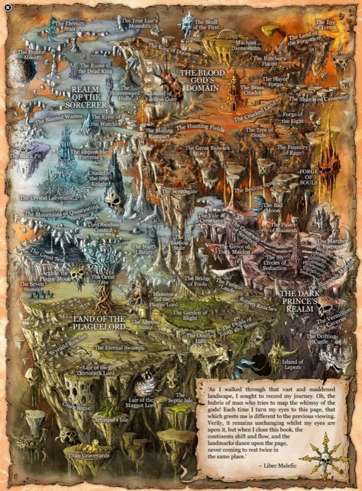

Slaanesh
| Slaanesh The Dark Prince | |
|---|---|
 The mark of Slaanesh Artwork © Games Workshop | |
| Titles | The Dark Prince, the Prince of Pleasure, the Lord of Excess; to the Aeldari, She Who Thirsts |
| Domain | Pleasure, pain, pride, craving, perfection and excess |
| Colours | Purple, pink and silver |
| Realm | The Dark Prince's Realm, with the Palace of Slaanesh, in the Realm of Chaos |
| Symbol | The orb and crescent; the claw; the hourglass |
| Born | The Fall of the Aeldari, c. M30 |
| Rival | Nurgle |
| Servants | |
| Greater daemons | Keepers of Secrets |
| Lesser daemons | Daemonettes, Fiends, Seekers, Hellflayers |
| Mortal champions | Lucius the Eternal, Fabius Bile (disputed); Daemon Primarch Fulgrim |
| Legion | Emperor's Children |
Slaanesh, called the Dark Prince, the Prince of Pleasure and the Lord of Excess, and known to the Aeldari as She Who Thirsts, is the youngest of the four Ruinous Powers and the one whose birth Imperial scholars can date. Slaanesh came into being in the final decline of the Aeldari empire in the late thirtieth millennium, when the whole of a civilisation of psychic beings turned their minds to indulgence and their collective emotion in the Warp took on a will of its own. It fed first on the Aeldari and consumed the greater part of the species. It continues to feed on all who pursue pleasure, perfection, pride and pain beyond restraint.[1]
Where Khorne drives men to violence and Nurgle draws them to despair, Slaanesh draws them to want. The aspect of the Dark Prince is craving, and the Powers' lure is subtle: it works on the best qualities of the victim as readily as on the worst. A scholar's devotion to his work, a soldier's pride in his discipline and an artist's search for perfection are all of interest to Slaanesh, and all may be turned. The Ordo Malleus has recorded that Slaanesh's cults often begin among the finest people of a world, and that those who join them are rarely the weak.[2]
Slaanesh's mortal servants are led by the Emperor's Children, the III Legion, whose primarch Fulgrim became a Daemon Prince of the Dark Prince during the Horus Heresy. They are joined by pleasure-cults in the nobility of the Imperium's hive worlds, by renegade artists and by those who have found in the senses something the Emperor's Truth does not provide. The Imperial Cult holds that every man who falls to Slaanesh has first lost his faith, and that the cure is to rebuild it. The Ordo Malleus does not share the confidence of the Cult.[3]
Nature and domain
[edit]The Dark Prince
[edit]Slaanesh's nature is the subject of much scholarly disagreement. The Imperial and Aeldari sources differ on whether the Power is male, female, both or neither. The Imperial scholars generally call Slaanesh "he" or "it", and the Aeldari "she". In the cults' own prayers the Dark Prince is addressed by many titles of both genders. Inquisitors have been warned against attributing a sex to the Power, since the Dark Prince is known to take whatever form its observer finds most compelling.[1]
The Power is described by those who have studied it as being at once the most seductive and the most terrible of the four. Its cults are devoted to the pursuit of sensation and the cultivation of the self. A Slaaneshi cultist may be a connoisseur of music, a duellist or a gourmand, but in each case the cultist has taken the pursuit past what the body and mind can bear. Every sense becomes dulled by repetition, and the follower must go further to feel anything. The final stage is a hunger that nothing satisfies, and that has consumed the followers who reached it.[2]
The Palace of Slaanesh
[edit]The domain of Slaanesh in the Warp is the Dark Prince's Realm, a region of palaces, gardens and winding corridors, in which every pleasure that the senses have ever imagined is offered, and every pain. At the heart of the Realm is the Palace of Slaanesh, a vast structure of towers and balconies in which the Dark Prince is said to hold court. It is surrounded by the Six Circles of Seduction, a series of concentric districts, each devoted to a particular sin. A mortal who enters the Palace is said to be offered whatever he desires. The Inquisition records no case of one who returned who was not changed.[1]

Daemons
[edit]Daemonettes
[edit]The common troops of Slaanesh's host are the Daemonettes, slender, graceful creatures with the faces of beautiful women and the claws of crabs. They move with great speed and fight with a cruel precision, and their voices are said to be able to stun an enemy before the blades strike. The Imperial Guard's manual warns troops that the sound of a Daemonette's song is a sign to retreat and not to listen. Their appearance is deliberately attractive, and the Inquisition has found that many soldiers who fought them reported afterward that they were unable to harm a creature of such beauty.[4]
Keepers of Secrets
[edit]The greatest of Slaanesh's daemons are the Keepers of Secrets, tall, four-armed creatures of terrible grace, who command the Dark Prince's armies and guard its mysteries. Each carries some part of the Power's knowledge, and those who have faced them describe an uncanny sense of being known. They are among the most dangerous of the greater daemons, because their power is directed at the mind, and a soldier who has been seduced is of no further use to the Imperium. The most notorious Keepers of Secrets are said to have been among the first daemons to be summoned on a human world, and their names are in the Ordo Malleus's sealed index.[1]

Other servants
[edit]The Fiends of Slaanesh are strange, scorpion-tailed beasts that serve as the Power's hounds, and the Seekers are daemonic riders on mounts that move faster than the eye can follow. The Hellflayers are chariots drawn by Seekers and carrying Daemonettes. The Imperium has recorded that Slaanesh also commands a number of mortal followers who have undergone changes that make them daemonic in all but name. These are often the most dangerous of its servants, for they walk freely in the world and are indistinguishable from men until the moment they strike.[5]
Worshippers
[edit]Cults and the pursuit of excess
[edit]The cults of Slaanesh are common among the wealthy and the idle. They are most often found in the hives of the Imperium, where the pursuit of luxury is a way of life for the nobility. Typical cults begin with a society of the arts, a gathering of connoisseurs or a school of duellists. The members test one another, and the standards of the group rise. Over time, the pursuit of excellence becomes the pursuit of excess, and the cult descends to unimaginable practices. The cult's leader is usually the most accomplished of the group, and has a genuine claim to genius. The Inquisition's records are full of such cults, and of the careers that were wasted in them.[2]
Slaanesh's followers also include those who have been driven to him by pain. A soldier who has suffered the loss of his body or his comrades may seek in Slaanesh's sensations a relief from the Imperial Truth that offers him none. The Dark Prince's cultists are often skilled recruiters, and their appeals are directed at those who have been hurt. Imperial medicae officers have been instructed to watch for the signs, and the Inquisition has noted that the chaplains and apothecaries of the Space Marine Chapters, who deal with the injured and the dying, are particularly at risk.[5]
The Emperor's Children
[edit]The Emperor's Children were the III Legion of the Great Crusade, raised on the world of Chemos under their primarch Fulgrim. The Legion was the most refined and ambitious of the Space Marine Legions. Its warriors were exemplary in all things, drilled to perfection, and increasingly intolerant of failure in themselves. In the Crusade, the Legion took the Palatine Aquila, the Emperor's own personal sigil, as its badge. The pursuit of perfection drove it to the worlds it conquered, and eventually to the world of the Laer, a xenos people whose temple structure the Legion destroyed. The temple, the Ordo Malleus records, had been dedicated to the Dark Prince.[6]
The Legion's descent began with the discovery of a cursed weapon on that world, which Fulgrim took for himself and which, in the Imperium's most careful reading, began his corruption. Over the years the Legion's pursuit of perfection became an obsession with sensation, and its warriors discovered that the pain of battle and the thrill of killing had become more important to them than their loyalty to the Emperor. They joined the Warmaster at Isstvan III and killed Ferrus Manus at Isstvan V. In the aftermath the Legion's transformation was completed, and Fulgrim became a Daemon Prince of Slaanesh. The Legion is called by its own warriors the Emperor's Children no longer, though the name has been retained by the Imperium in its records.[6]
The Noise Marines and the Legion's fate
[edit]The Heretic Astartes of the Emperor's Children are called Noise Marines when they fight with sonic weapons whose sound is a form of sorcery, and the Legion is known to be the Heretic Astartes most obsessed with sensation. After the Heresy the Legion fled to the Eye of Terror and fractured into many bands, each devoted to a different pleasure. Fulgrim, wearied by the poor satisfactions of his warriors, withdrew to a daemon world in the Warp that he named Callax after the city of his youth. The Legion's warbands continue to raid the Imperium. They have been implicated in atrocities of unusual refinement, and the Imperium has recorded their appearance on hundreds of worlds. In the Era Indomitus, with the opening of the Great Rift, they have been more active than at any time since the Heresy.[6]
History
[edit]The Fall of the Aeldari
[edit]The birth of Slaanesh is described in the entry on the Eye of Terror, where it is recorded as the cause of that great wound in the galaxy. In brief, the Aeldari were a species of great psychic power who built a vast civilisation in the first ages of the galaxy. They indulged themselves in every pleasure, until at last the sum of their excesses gave birth to a new Power in the Warp. At its birth Slaanesh devoured the souls of the greater part of the Aeldari, and the cry of its birth shattered the empire, tore open the Eye of Terror and left only a remnant of the species in the craftworlds, the Dark City of Commorragh and the wandering fleets of the exodites. The Aeldari have not forgotten, and the remnants live in terror of the Dark Prince, since any Aeldari who dies without the protection of a soulstone is drawn to Slaanesh.[1]
The Horus Heresy and after
[edit]Slaanesh was the last of the Powers to take part in human affairs. In the Great Crusade its influence was modest, and its first recorded appearance in the Imperium was in the corruption of the Emperor's Children. During the Horus Heresy its role was small compared with that of the other Powers, although the Legion's fall at Isstvan and its actions at the Siege of Terra were of great use to the Warmaster. After the Heresy the Dark Prince's cults grew rapidly, and their influence is attested in the great pleasure-hives of the Imperium and in the decadent courts of the Imperial nobility.[7]
In the Era Indomitus, Slaanesh's followers have been active in the Great Rift, and the Dark Prince's daemons have been reported in the Imperium Nihilus. Aeldari seers have warned that the Power stirs, though the Imperium has not been able to verify the claim. The Ordo Malleus has ordered particular care in the study of Slaanesh, since the Dark Prince's influence is the hardest of the four to detect.[8]
Relations with other Powers
[edit]Slaanesh's chief rival among the Powers is Nurgle. The Plague God's followers regard Slaanesh's cultists as wasteful, and Slaanesh's regard Nurgle's as dull. Khorne holds the Dark Prince in contempt, as the Blood God despises everything that is not battle. The Changer's relations with Slaanesh are recorded as the least hostile of the four, but even these are marked by suspicion. Imperial scholars have noted that Slaanesh, as the youngest Power, appears to have been welcomed by the others with reluctance, and that its birth altered the balance of the Warp in ways that are still not fully understood.[1]
Imperial response
[edit]The Imperial response to Slaanesh's cults is generally one of surveillance. The cults are often found among the nobility, and a direct assault may cause great political damage. The Inquisition's standard procedure is to place an Inquisitor in the cult as an observer and to strike only when the cult's leaders are identified. The Adepta Sororitas and the Imperial Cult maintain strict codes of conduct, and the Grey Knights are trained to resist the sensory attacks of Slaanesh's daemons. The most reliable defence, according to the Ordo Malleus, is austerity: a mind that is trained to want nothing has nothing for the Dark Prince to take.[3]
Timeline
[edit]| Date | Event |
|---|---|
| ca. M29–M30 | The Fall of the Aeldari: the birth of Slaanesh tears the core of the Aeldari Empire from the galaxy. |
| Late M30 | Fulgrim and the Emperor's Children Legion fall to Slaanesh's influence before the Heresy.[a] |
| 005.M31 | The Emperor's Children turn traitor at Isstvan III under Fulgrim. |
| 013–014.M31 | The Siege of Terra is fought, and the Emperor's Children join the Traitor assault. |
| 764.M34 | The Emperor's Children shatter Lugganath in a campaign of pleasure and bloodshed. |
| Early M42 | The Emperor's Children and the Slaaneshi cults continue to spread through the Eye of Terror and the wider galaxy.[b] |
See also
[edit]Notes
[edit]References
[edit]- ^ a b c d e f Warhammer 40,000: Core Book (9th Edition), pp. 37-38. Games Workshop. Codex: Chaos Daemons (8th Edition), pp. 22-25, 65. Games Workshop.
- ^ a b c McNeill, Graham. Fulgrim (novel). Black Library. McNeill, Graham. Angel Exterminatus (novel). Black Library.
- ^ a b Codex: Chaos Daemons (6th Edition), pp. 6-17, 53. Games Workshop. Codex: Grey Knights (5th Edition), pg. 14. Games Workshop.
- ^ Codex: Tyranids (5th Edition), pg. 58. Games Workshop. Codex: Chaos Daemons (4th Edition), pp. 26, 29. Games Workshop.
- ^ a b White Dwarf 274 (UK), "Index Malleus: Infernal Threat -- An Investigation into the Foul Daemons of the Warp", by Phil Kelly & Graham McNeill, pp. 88-93. The Primarchs (Anthology), "The Reflection Crack'd" by Graham McNeill.
- ^ a b c What Price Victory? (Anthology), "The Beguiling" by Sandy Mitchell. Deathwatch: Mark of the Xenos, pp. 104-105.
- ^ Imperial Armour - Apocalypse, pg. 97. Index Astartes I, "Children of the Emperor - The Emperor's Children Space Marine Legion".
- ^ Liber Chaotica: Slaanesh. Realm of Chaos: Slaves to Darkness, pp. 14, 16, 30-34.
Further reading
[edit]- Liber Daemonica (rev. M38). Ordo Malleus. The chapter on the Dark Prince and his host. Restricted.
- Liber Primarchus (M32, revised M41). The entry on the III Legion.